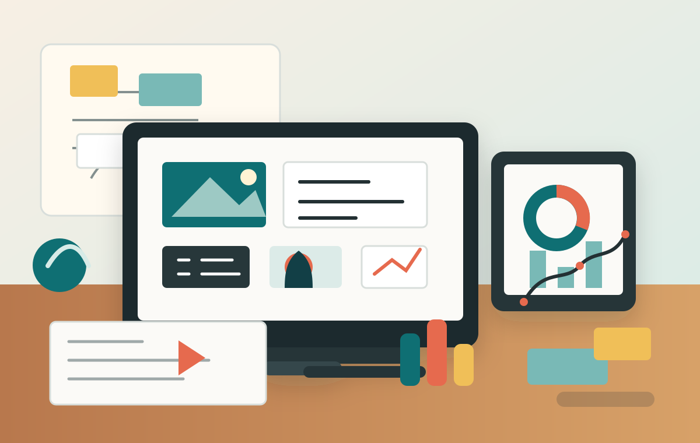

Instructional Design
Hedef kitle analizi, ogrenme hedefleri, storyboard, senaryo ve modul akisi.
Instructional Designer / EdTech Professional
Dijital ogrenme deneyimleri, e-learning icerikleri, LMS akislari ve veriyle desteklenen egitim cozumleri tasarlayan bir portfolio.

Profil
Merhaba, ben Ad Soyad. Ogretim tasarimi, egitim teknolojileri ve dijital icerik gelistirme alanlarinda calisiyorum. Hedefim, karmasik konulari ogrenilebilir yollara ayirmak ve her deneyimi is hedefleriyle uyumlu hale getirmek.
Bu portfolio; vaka calismalarimi, tasarim surecimi, kullandigim araclari ve ortaya koydugum ogrenme cozumlerini tek bir yerde toplamak icin hazirlandi.
Uzmanliklar
Hedef kitle analizi, ogrenme hedefleri, storyboard, senaryo ve modul akisi.
Etkilesimli icerikler, mikro ogrenme, video destekli akislari ve quiz yapilari.
Rubrikler, performans gorevleri, olcme araclari ve veriyle iyilestirme.
LMS yapilandirma, raporlama, icerik standartlari ve dijital urun akislari.
Secili projeler
Kurumsal Egitim
4 haftalik karma ogrenme deneyimi: asenkron moduller, canli oturum tasarimi, yonetici kontrol listeleri ve LMS raporlama yapisi.
Higher Education
Yuz yuze ders iceriginin moduler, erisilebilir ve olculebilir online ders deneyimine donusturulmesi.
EdTech Product
Ogretmenlerin ogrenci ilerlemesini hizli okuyabilmesi icin basit, aksiyon odakli raporlama ve geri bildirim akisi.
Surec
Hedef kitle, performans boslugu, baglam ve basari olcutleri netlestirilir.
Ogrenme hedefleri, akistan ekrana kadar deneyimin omurgasina donusur.
Icerik, etkilesim, gorsel dil, olcme ve teknik yayin akisi hazirlanir.
Kullanim verisi ve geri bildirimler yeni iterasyonlara kaynak olur.
Arac kutusu
Iletisim
E-posta, LinkedIn ve GitHub baglantilarini kendi bilgilerinizle guncelleyerek bu alani yayina hazir hale getirebilirsiniz.